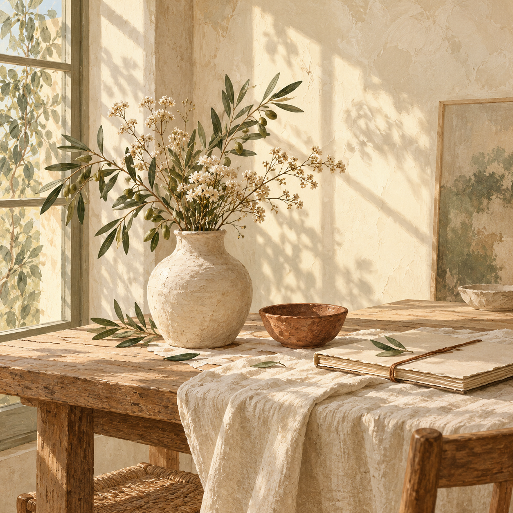

Frontend Software Engineer · Pensacola, FL
Making the
internet feel a little
more human.
Hi, I’m Shelby — a frontend developer who turns your ideas into thoughtful, joyful experiences for the web.
TAKE SHAPE ↗
WITH
FEELING ✳
A little color goes a long way.

Creative, collaborative, resourceful, and reliable
A good website
should feel like
somewhere.
Shelby here, I’m a frontend software engineer who loves bringing ideas to life through clean code and thoughtful design. I enjoy building responsive, user-friendly websites that look great, work seamlessly, and create meaningful digital experiences. With a background in education and instructional design, I bring a user-first mindset, creativity, and a passion for solving problems to every project.
My goal is simple: to create beautiful, accessible, and intuitive websites that make a lasting impression.
More about working togetherstudents using technology
with good people
(on a slow day)
A few recent favorites
Made with intention.
Good work comes from good conversations.
Here are a few of my favorite collaborations.
Click on any prroject, to create something similar.
G
KIND OF
SUNDAY
considered things.
side®
GOOD IN YOUR DAY
ground
✳ Every project is a conversation. So let’s start one.
The best things start with hello
Let’s make
something matter.
Have a project, a half-formed idea, or just want to say hi? My inbox is a friendly place.
bubien.shelby@gmail.com